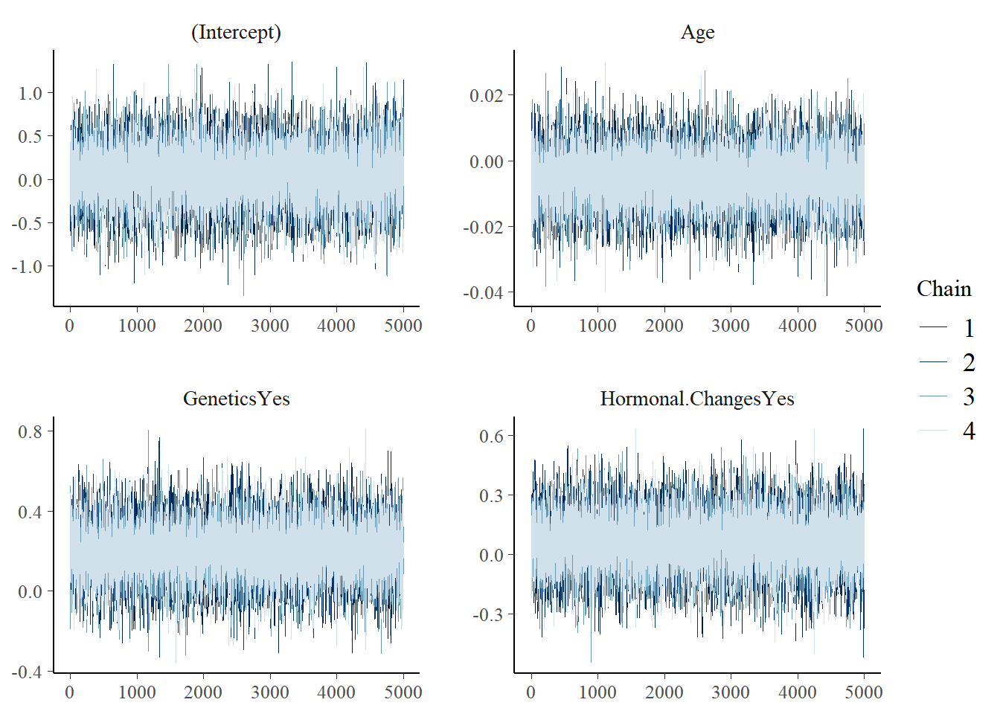
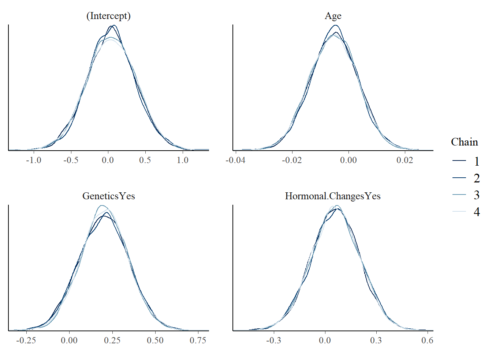
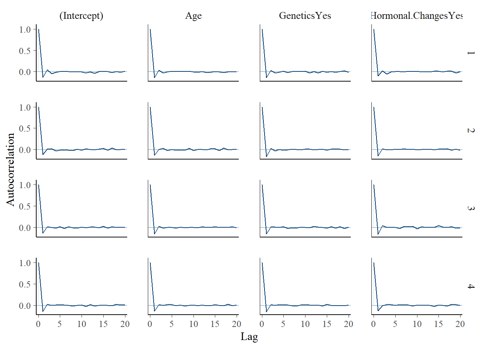
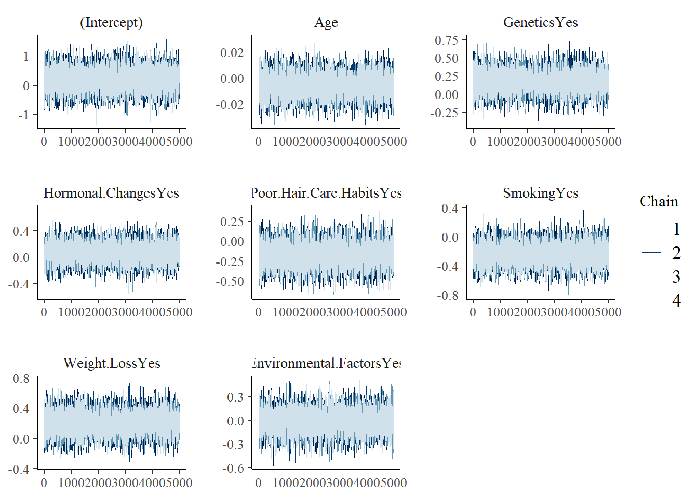
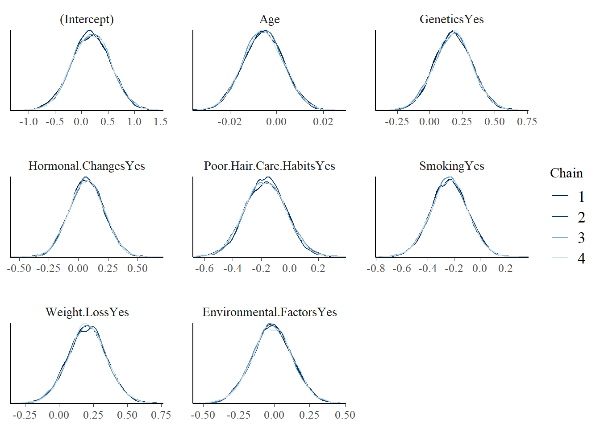
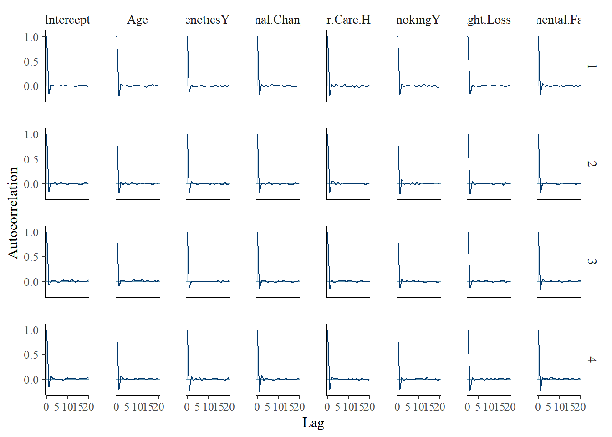
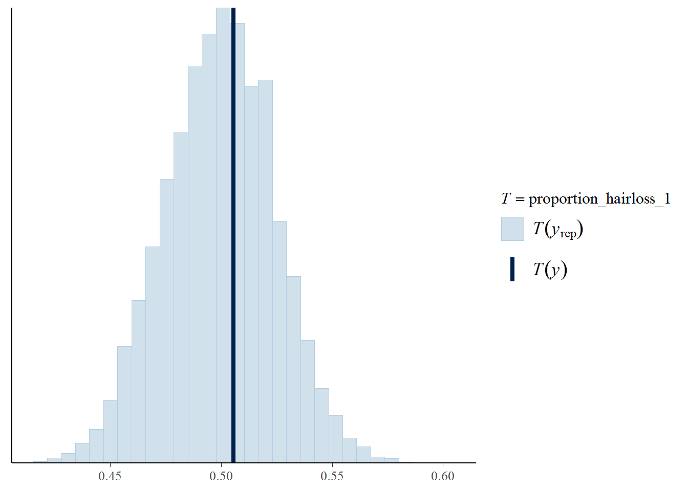

suppressPackageStartupMessages({
library(bayesrules)
library(rstanarm)
library(bayesplot)
library(tidyverse)
library(tidybayes)
library(broom.mixed)
library(readr)
library(data.table)
library(janitor)
})Datacamp project: What determines hair loss? A Bayesain logistic regression analysis
Background
As we age, hair loss becomes one of the health concerns of many people. The fullness of hair not only affects appearance, but is also closely related to an individual’s health.
A survey brings together a variety of factors that may contribute to hair loss, including genetic factors, hormonal changes, medical conditions, medications, nutritional deficiencies, psychological stress, and more. Through data exploration and analysis, the potential correlation between these factors and hair loss can be deeply explored, thereby providing useful reference for the development of individual health management, medical intervention and related industries.
The data
Data contains information on persons in this survey. Each row represents one person.
- “Id” - A unique identifier for each person.
- “Genetics” - Whether the person has a family history of baldness.
- “Hormonal Changes” - Indicates whether the individual has experienced hormonal changes (Yes/No).
- “Medical Conditions” - Medical history that may lead to baldness; alopecia areata, thyroid problems, scalp infections, psoriasis, dermatitis, etc.
- “Medications & Treatments” - History of medications that may cause hair loss; chemotherapy, heart medications, antidepressants, steroids, etc.
- “Nutritional Deficiencies” - Lists nutritional deficiencies that may contribute to hair loss, such as iron deficiency, vitamin D deficiency, biotin deficiency, omega-3 fatty acid deficiency, etc.
- “Stress” - Indicates the stress level of the individual (Low/Moderate/High).
- “Age” - Represents the age of the individual.
- “Poor Hair Care Habits” - Indicates whether the individual practices poor hair care habits (Yes/No).
- “Environmental Factors” - Indicates whether the individual is exposed to environmental factors that may contribute to hair loss (Yes/No).
- “Smoking” - Indicates whether the individual smokes (Yes/No).
- “Weight Loss” - Indicates whether the individual has experienced significant weight loss (Yes/No).
- “Hair Loss” - Binary variable indicating the presence (1) or absence (0) of baldness in the individual.
#import the data
data = read.csv(file = "hair_loss_data.csv")
str(data)'data.frame': 999 obs. of 13 variables:
$ Id : int 133992 148393 155074 118261 111915 139661 169255 112032 140785 187999 ...
$ Genetics : chr "Yes" "No" "No" "Yes" ...
$ Hormonal.Changes : chr "No" "No" "No" "Yes" ...
$ Medical.Conditions : chr "No Data" "Eczema" "Dermatosis" "Ringworm" ...
$ Medications...Treatments: chr "No Data" "Antibiotics" "Antifungal Cream" "Antibiotics" ...
$ Nutritional.Deficiencies: chr "Magnesium deficiency" "Magnesium deficiency" "Protein deficiency" "Biotin Deficiency " ...
$ Stress : chr "Moderate" "High" "Moderate" "Moderate" ...
$ Age : int 19 43 26 46 30 37 40 35 19 49 ...
$ Poor.Hair.Care.Habits : chr "Yes" "Yes" "Yes" "Yes" ...
$ Environmental.Factors : chr "Yes" "Yes" "Yes" "Yes" ...
$ Smoking : chr "No" "No" "No" "No" ...
$ Weight.Loss : chr "No" "No" "Yes" "No" ...
$ Hair.Loss : int 0 0 0 0 1 1 1 0 1 0 ...#check missing values
missing_values = sapply(data, function(x) sum(is.na(x)))
missing_values Id Genetics Hormonal.Changes
0 0 0
Medical.Conditions Medications...Treatments Nutritional.Deficiencies
0 0 0
Stress Age Poor.Hair.Care.Habits
0 0 0
Environmental.Factors Smoking Weight.Loss
0 0 0
Hair.Loss
0 The echo: false option disables the printing of code (only output is displayed).
Data cleaning
Most of these columns are either characters or integers which are not ideal for analysis. Therefore, continuous variables will be transformed into numeric and categorical/binary variables to be transformed into factor. There does not seem to have NA values in the data set, but some of these columns have entry like “No data”, we will have to drop them for simplicity. List-wise deletion is used to deal with “No data”.
#clean data
data$Genetics = factor(data$Genetics, levels = c("No", "Yes"))
data$Hormonal.Changes = factor(data$Hormonal.Changes, levels = c("No", "Yes"))
data$Medical.Conditions = factor(data$Medical.Conditions)
data$Medications...Treatments = factor(data$Medications...Treatments)
data$Nutritional.Deficiencies = factor(data$Nutritional.Deficiencies)
data$Stress = factor(data$Stress)
data$Age = as.numeric(data$Age)
data$Poor.Hair.Care.Habits = factor(data$Poor.Hair.Care.Habits)
data$Environmental.Factors = factor(data$Environmental.Factors)
data$Smoking = factor(data$Smoking, levels = c("No", "Yes"))
data$Weight.Loss = factor(data$Weight.Loss, levels = c("No", "Yes"))
data$Hair.Loss = factor(ifelse(data$Hair.Loss ==1, "Yes", "No"), levels = c("No", "Yes"))
data = data %>%
filter(if_all(everything(), ~ . != "No Data"))
#id duplication
data %>%
group_by(Id) %>%
filter(n() > 1)# A tibble: 4 × 13
# Groups: Id [2]
Id Genetics Hormonal.Changes Medical.Conditions Medications...Treatments
<int> <fct> <fct> <fct> <fct>
1 157627 Yes No Dermatosis Rogaine
2 110171 Yes No Thyroid Problems Antifungal Cream
3 110171 No No Psoriasis Immunomodulators
4 157627 No No Thyroid Problems Accutane
# ℹ 8 more variables: Nutritional.Deficiencies <fct>, Stress <fct>, Age <dbl>,
# Poor.Hair.Care.Habits <fct>, Environmental.Factors <fct>, Smoking <fct>,
# Weight.Loss <fct>, Hair.Loss <fct>#remove them
data = data %>%
mutate(Id = as.character(Id)) %>%
filter(Id != "157627"& Id != "110171")Specifying priors of the coefficient
Starting with tuning the centered intercept, since i am not an expert in this field, I have to look up on internet to check that on average, what is the chance of balding in our population. However, it gives me different chance of balding at different age and gender. Therefore, the chance of balding, on average, covers a wide range from 16% to 50% given that our data has a max age at 50 (range will be wider if we have older individuals). The upper and lower range of log odds can be calculated as:
\[ \text{log-odds}_{\text{upper}} = \ln\left(\frac{0.5}{1-0.5}\right) = \ln(1) \approx 0 \]
\[ \text{log-odds}_{\text{lower}} = \ln\left(\frac{0.16}{1-0.16}\right) = \ln(0.190) \approx −1.660 \]
\[ \text{mean} = \frac{-1.660 + 0.000}{2} \approx -0.830 \]
Thus, the prior mean of the intercept on log odds scale will be -0.830. Since we have some understanding about the range of the intercept which is roughly -1.66 to 0 (-0.8 +- 2*0.4).
However, we have less understanding about the prior distribution of other coefficients and the relationship of hair loss when controlling for other predictors. Therefore, we will utilise weakly informative prior for other coefficients being included in the model. For simplicity, I do not want to use all the variables yet but to choose a few of them to build a simple model. Since contributors to hair loss such as medical conditions, age and treatment are well known, the first model will include these variables.
Simulate the posterior
#simulate the model
model_1 <- stan_glm(
Hair.Loss ~ Age + Genetics+Hormonal.Changes,
data = data, family = binomial,
prior_intercept = normal(-0.8, 0.4),
prior = normal(0, 2.5, autoscale = TRUE),
chains = 4, iter = 5000 * 2, seed = 87453804,
)Check the diagnostic plots for stability our the simulation.
mcmc_trace(model_1)
mcmc_dens_overlay(model_1)
mcmc_acf(model_1)
These plots suggest the model achieved convergence. A posterior summary is shown below. The 80% credible intervals, Age and Hormoal Change straddle 0 on the log-odds scale (equivalent to including 1 on the odds ratio scale). Genetics seems to be a a statistically significant predictor with the outcome at the 80% credible level.
tidy(model_1, effects = "fixed",
conf.int = TRUE, conf.level = 0.8)# A tibble: 4 × 5
term estimate std.error conf.low conf.high
<chr> <dbl> <dbl> <dbl> <dbl>
1 (Intercept) 0.0422 0.327 -0.373 0.468
2 Age -0.00510 0.00852 -0.0162 0.00565
3 GeneticsYes 0.203 0.142 0.0188 0.383
4 Hormonal.ChangesYes 0.0619 0.143 -0.123 0.247 In the second model, i will try to add variables including poor hair habits, smoking, weight loss and environmental factors.
#simulate the model
model_2 <- stan_glm(
Hair.Loss ~ Age + Genetics+Hormonal.Changes+Poor.Hair.Care.Habits + Smoking + Weight.Loss+Environmental.Factors,
data = data, family = binomial,
prior_intercept = normal(-0.8, 0.4),
prior = normal(0, 2.5, autoscale = TRUE),
chains = 4, iter = 5000 * 2, seed = 87453804,
)mcmc_trace(model_2)
mcmc_dens_overlay(model_2)
mcmc_acf(model_2)
Model 2 does not perform any better in identifying significant predictors of the outcome. The 80% credible intervals for most of the variables straddle 0 on the log-odds scale. Genetics remain as a significant predictor as well as Weight Loss.
tidy(model_2, effects = "fixed",
conf.int = TRUE, conf.level = 0.8)# A tibble: 8 × 5
term estimate std.error conf.low conf.high
<chr> <dbl> <dbl> <dbl> <dbl>
1 (Intercept) 0.183 0.371 -0.283 0.653
2 Age -0.00567 0.00869 -0.0168 0.00552
3 GeneticsYes 0.180 0.145 -0.00713 0.364
4 Hormonal.ChangesYes 0.0701 0.146 -0.117 0.257
5 Poor.Hair.Care.HabitsYes -0.171 0.146 -0.355 0.0114
6 SmokingYes -0.234 0.141 -0.418 -0.0514
7 Weight.LossYes 0.207 0.139 0.0239 0.388
8 Environmental.FactorsYes -0.0155 0.140 -0.198 0.168 Model 3 will include the remaining variables, medical conditions, medical treatment and stress.
#set reference level
data[["Medical.Conditions"]] =relevel(factor(data[["Medical.Conditions"]]), ref = "Eczema")
data[["Medications...Treatments"]] =relevel(factor(data[["Medications...Treatments"]]), ref = "Antibiotics")
data[["Stress"]] =relevel(factor(data[["Stress"]]), ref = "Low")
#simulate the model
model_3 <- stan_glm(
Hair.Loss ~ Age + Genetics+Hormonal.Changes+Poor.Hair.Care.Habits + Smoking + Weight.Loss+Environmental.Factors+ Medical.Conditions+Medications...Treatments+Stress,
data = data, family = binomial,
prior_intercept = normal(-0.8, 0.4),
prior = normal(0, 2.5, autoscale = TRUE),
chains = 4, iter = 5000 * 2, seed = 87453804,
)Notice that Genetics posterior straddles 0 with a 80% posterior credible interval. This suggest that Genetics is not a significant predictor of hair loss when controlling for medical conditions, medical treatment and stress. In other words, this may imply when we already know the medical conditions, medical treatment and stress, genetics does not significantly improve our understanding of hair loss. Weight loss remains as a significant predictor as well as medical conditions especially Alopecia Areata at 80% posterior credible interval.
tidy(model_3, effects = "fixed",
conf.int = TRUE, conf.level = 0.8)# A tibble: 28 × 5
term estimate std.error conf.low conf.high
<chr> <dbl> <dbl> <dbl> <dbl>
1 "(Intercept)" 0.192 0.495 -0.446 0.824
2 "Age" -0.00632 0.00905 -0.0176 0.00528
3 "GeneticsYes" 0.153 0.148 -0.0366 0.341
4 "Hormonal.ChangesYes" 0.0531 0.146 -0.138 0.243
5 "Poor.Hair.Care.HabitsYes" -0.202 0.146 -0.390 -0.0132
6 "SmokingYes" -0.280 0.148 -0.471 -0.0914
7 "Weight.LossYes" 0.224 0.149 0.0329 0.415
8 "Environmental.FactorsYes" 0.00636 0.145 -0.179 0.193
9 "Medical.ConditionsAlopecia Areata " 0.500 0.338 0.0759 0.934
10 "Medical.ConditionsAndrogenetic Alopec… 0.409 0.341 -0.0284 0.847
# ℹ 18 more rowsI would want to use an extra model 4 to just include variables that have shown significance in the previous model.
#simulate the model
model_4 <- stan_glm(
Hair.Loss ~ Genetics+Weight.Loss+Medical.Conditions,
data = data, family = binomial,
prior_intercept = normal(-0.8, 0.4),
prior = normal(0, 2.5, autoscale = TRUE),
chains = 4, iter = 5000 * 2, seed = 87453804,
)tidy(model_4, effects = "fixed",
conf.int = TRUE, conf.level = 0.8)# A tibble: 12 × 5
term estimate std.error conf.low conf.high
<chr> <dbl> <dbl> <dbl> <dbl>
1 "(Intercept)" -0.341 0.275 -0.692 0.0124
2 "GeneticsYes" 0.219 0.143 0.0316 0.400
3 "Weight.LossYes" 0.224 0.143 0.0422 0.408
4 "Medical.ConditionsAlopecia Areata " 0.446 0.325 0.0327 0.871
5 "Medical.ConditionsAndrogenetic Alopec… 0.311 0.332 -0.116 0.741
6 "Medical.ConditionsDermatitis" -0.00527 0.333 -0.439 0.423
7 "Medical.ConditionsDermatosis" 0.0126 0.340 -0.426 0.451
8 "Medical.ConditionsPsoriasis" 0.119 0.330 -0.306 0.544
9 "Medical.ConditionsRingworm" -0.0437 0.360 -0.512 0.422
10 "Medical.ConditionsScalp Infection" 0.0357 0.348 -0.404 0.483
11 "Medical.ConditionsSeborrheic Dermatit… 0.353 0.343 -0.0783 0.796
12 "Medical.ConditionsThyroid Problems" -0.162 0.332 -0.585 0.265 How wrong is the model?
Lets just use model 1 as an example. From each of the 100 posterior simulated data sets, we record the proportion of outcome that are 1, i.e., the proportion of hair loss. A histogram of these simulated hair loss rates are consistent with the original data. Most of the posterior simulated data sets showed a roughly 50% chance of hair loss, close to the observed data.
proportion_hairloss_1 = function(x){mean(x==1)}
pp_check(model_1, nreps = 100,
plotfun = "stat", stat="proportion_hairloss_1")Warning: 'nreps' is ignored for this PPC`stat_bin()` using `bins = 30`. Pick better value with `binwidth`.
How accurate is the model?
A confusion matrix summarise the information of the overall accuracy of the model. The model does not seem to perform very well. The model only correctly classified 431 of the 809 total test cases. The overall classification accuracy rate is 53%.
hair_loss_pred_1 = posterior_predict(model_1,newdata = data)
hair_loss_classfication =data %>%
mutate(hairloss_prob = colMeans(hair_loss_pred_1),
hairloss_class = as.numeric(hairloss_prob>=0.5)) %>%
tabyl(Hair.Loss, hairloss_class) %>%
adorn_totals(c("row","col"))
hair_loss_classfication Hair.Loss 0 1 Total
No 208 190 398
Yes 185 222 407
Total 393 412 805classification_summary(model = model_1, data=data, cutoff=0.5)$accuracy_rates
sensitivity 0.5405405
specificity 0.5201005
overall_accuracy 0.5304348Cross validation
Lets compare the cross-validated estimates of classification accuracy for all these models. It seems like model 1 perform the best.
set.seed(883548)
cv_accuray_1 = classification_summary_cv(model=model_1,data=data,cutoff = 0.5,k=5)
cv_accuray_2 = classification_summary_cv(model=model_2,data=data,cutoff = 0.5,k=5)
cv_accuray_3 = classification_summary_cv(model=model_3,data=data,cutoff = 0.5,k=5)
cv_accuray_4 = classification_summary_cv(model=model_4,data=data,cutoff = 0.5,k=5)cv_accuray_1$cv sensitivity specificity overall_accuracy
1 0.5080583 0.5142898 0.5043478cv_accuray_2$cv sensitivity specificity overall_accuracy
1 0.4776228 0.5084696 0.4881988cv_accuray_3$cv sensitivity specificity overall_accuracy
1 0.4880108 0.5067766 0.4956522cv_accuray_4$cv sensitivity specificity overall_accuracy
1 0.4642343 0.5473011 0.5031056Summary
The initial logistic regression models built to predict hair loss using variables such as age, medical conditions, and treatments showed poor overall accuracy. This performance is close to random guessing, indicating that the model may not be effectively capturing the patterns in the data. This report is primarily a trial-and-error exercise in practicing Bayesian regression. Therefore, the low overall prediction accuracy is not a critical concern in this context. Instead, the results may highlight that logistic regression may not be the most suitable model choice for this data set.